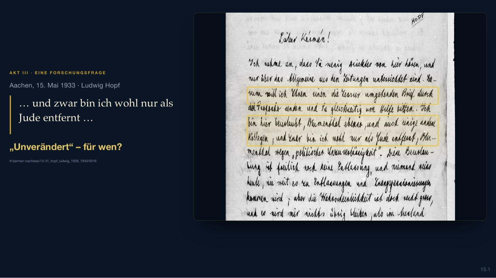
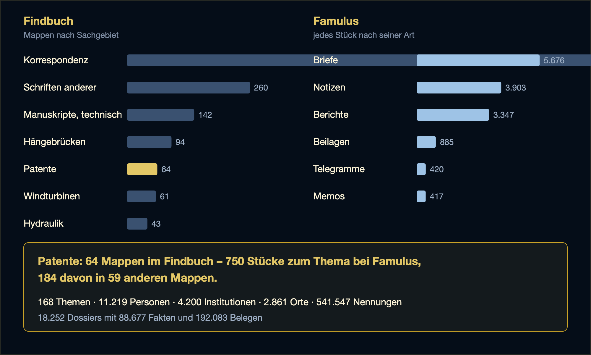
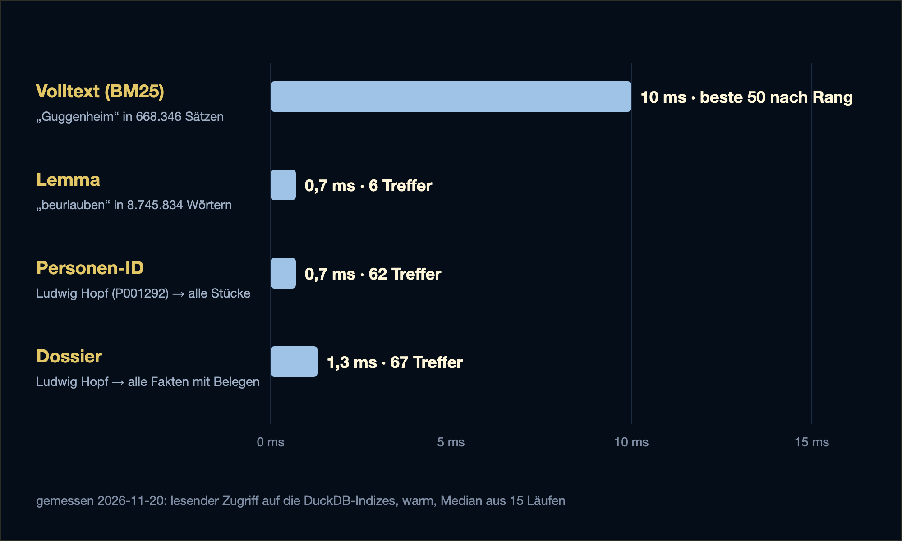
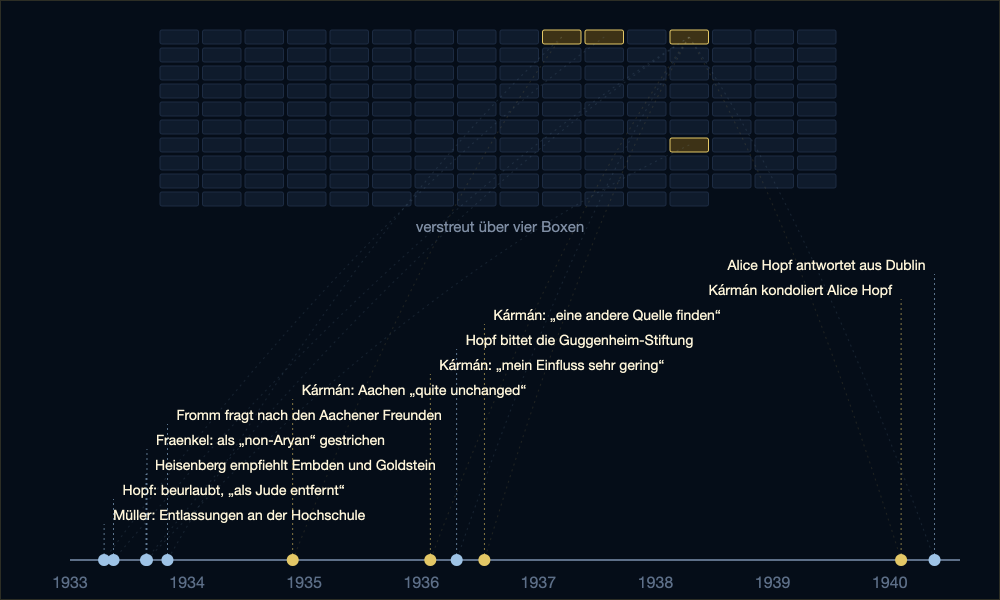
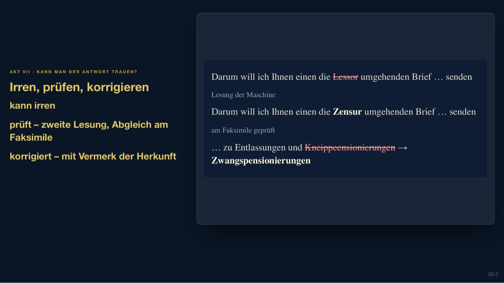
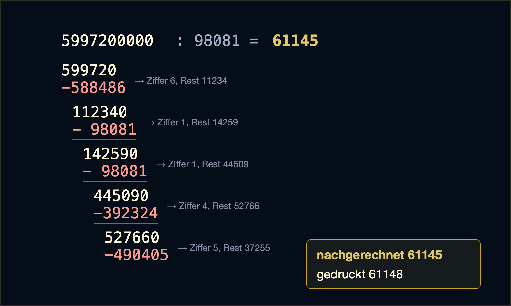
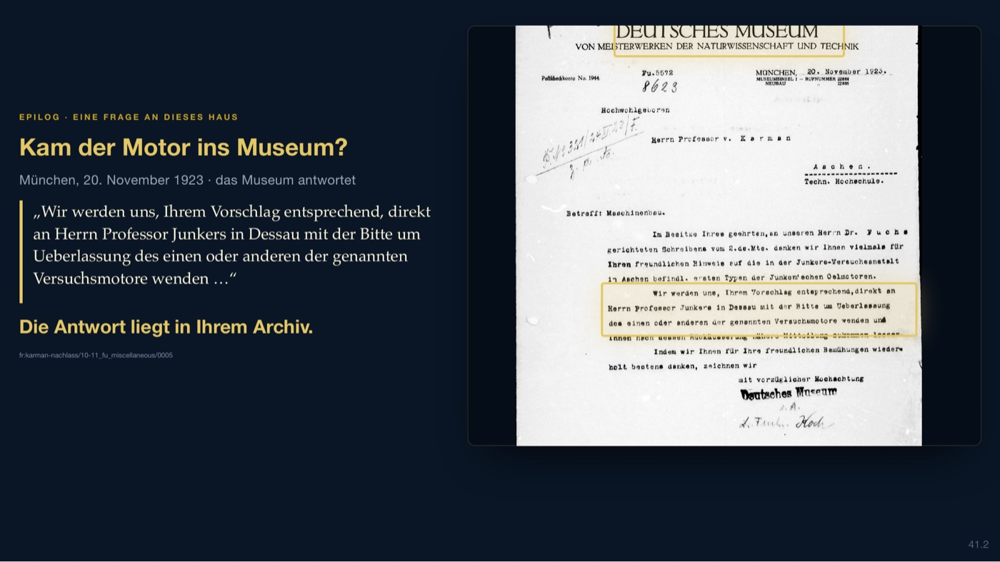

Der Kármán-Nachlass, mit Famulus gesichtet
Famulus Deep Reading
Famulus Lectures · Nr. 1 · Deutsches Museum, München, 23. November 2026 · Vom Autor revidierte Lesefassung (Version 1.1, Entwurf, Stand 24. November 2026) · CC BY-NC-ND 4.0.
Zitiervorschlag: Gerd Graßhoff: Der Kármán-Nachlass, mit Famulus gesichtet. Famulus Deep Reading. Famulus Lectures 1, Deutsches Museum, München, Montag, 23. November 2026. https://famulus.lettre.ai/lectures/1/
Eröffnung
Vielen Dank für die Einladung – und dafür, dass Sie an einem Montagmorgen so früh gekommen sind.
Was ich Ihnen heute zeige, soll nicht als Technik mit Aha-Effekt erscheinen, sondern als ein Hilfsmittel, das der Forschung nützt, dem Museum und allen, die mit seinen Beständen arbeiten. Dafür möchte ich argumentieren.
Der Famulus des Erasmus

Abb. 1 · Albrecht Dürer, Erasmus von Rotterdam, Kupferstich 1526. Im Monogramm ist das D durch ein F ersetzt: AF – Famulus. Metropolitan Museum of Art, New York, Inv. 19.73.120 (Fletcher Fund, 1919), gemeinfrei (CC0); Bearbeitung des Autors.
Ich berufe mich heute nicht auf die neueste Technologie, sondern auf eine große Tradition der Wissenschaftsgeschichte: auf Erasmus. Das, wofür ich argumentieren möchte, will ich gar nicht KI nennen. Das ist zunächst eine Frage der Terminologie – wovon sprechen wir eigentlich? Wir sprechen nicht von Agenten wie Claude oder anderen personalisierten Akteuren, sondern von etwas, das ich im Sprachgebrauch des Humanismus Famulus nennen möchte.
Erasmus verwendet das Wort in seinen Werken. Sehen Sie sich Dürers Stich an: Erasmus schreibt mit der rechten Hand, in der linken hält er etwas. Wie immer bei Dürer ist die große Frage, was wir hier eigentlich sehen. Ich deute es als Tintenfass – aber erlauben Sie mir den Gag, um die Metapher weiterzutreiben: In meiner Lesart ist das Famulus.
Famulus heißt auf Lateinisch der Gehilfe. Aus vielen Briefen des Erasmus wissen wir, dass ein Famulus sehr gelehrt sein konnte. Erasmus hatte ein ganzes Netz von Gehilfen, die ihm zuarbeiteten. In diese Zuarbeit durften sie jede Kompetenz einbringen – nur eines nicht: ein eigenes wissenschaftliches Urteil.
Lean und die Riemannsche Vermutung
Wie aktuell das ist, zeigen die letzten vier Tage. Ich betreibe einen Wissenschaftsmonitor, der alle zugänglichen Publikationen und Kommunikationen aufzeichnet, dokumentiert und auswertet – um zu sehen, wie Wissen in der Gemeinschaft der Forschenden entsteht. Seit dem 20. November verfolgt er live, was um die Riemannsche Vermutung geschieht.

Abb. 2 · Riemann: vier Tage auf allen Kanälen. Jede Karte ist ein Kommunikationsakt – Ankündigung, Zuarbeit, Frage, Prüfung, Validierung, Veröffentlichung.
An diesem Tag wurde angekündigt, die Riemannsche Vermutung sei bewiesen. Das ist zunächst nur eine steile Behauptung – erst recht, wenn man sieht, dass der Beweis nicht in herkömmlicher mathematischer Form vorgelegt wurde, sondern als 250 000 Seiten gedruckter Code.
Damit beginnt das erste Problem: Wer prüft diesen Code? Ist das schon Wissen? Natürlich nicht. Aber Sie sehen hier einen regen wissenschaftlichen Kommunikationsprozess. Ich bin überzeugt, dass am Ende entweder Wissen steht – oder eine vorlaute Ankündigung mit Lücken, die sich nicht mehr schließen lassen. Wie das Spiel ausgeht, wissen wir noch nicht.

Abb. 3 · Ein neuer Agent. Levent Alpöge, 20. November 2026: „… working with Claude …“ – und Lean, der Beweiser, nimmt an der Kommunikation teil.
Mich interessiert die Parallele. Schon die Erstankündigung lautet: Ich habe diesen Beweis gefunden, working with Claude. Bei Riemann wird Claude mitgenannt. Bei den vorgelegten letzten Beweisen insistieren die Firmen darauf, dass ausschließlich Claude, OpenAI oder ähnliche Namen genannt werden. Ein Streit ist darüber ausgebrochen, wer überhaupt als Urheber der Entdeckung gelten kann. Wer ist Claude? Claude ist eine Technologie. Durch die Namensgebung von Anthropic wird sie personalisiert, und genau das möchte ich vermeiden: Es suggeriert, wir hätten einen wissenschaftlichen Akteur vor uns. Den haben wir nach meiner Lesart nicht.
Lean, der Beweiser, ist ein Verfahren der automatischen Beweisführung. Er hat diese 250 000 Seiten durchgearbeitet und nachgewiesen, dass der Beweis lückenlos ist – und, nach allem, was die Gemeinschaft über den Einsatz dieser Technik weiß, korrekt. Diese Redeweise ist noch nahe einer personifizierenden Redeweise über Ergebnisse von Forschungsinstrumenten. Niemand würde heute in der Astrophysik eine Publikation zur Entdeckung von Schwarzen Löchern mittels Satellitenteleskopen zulassen, die den Namen der optikproduzierenden Firma als Autor der Erstpublikation vermarktet. Dennoch scheint ein Bedürfnis zu bestehen, die zweifelsfreien enormen Leistungsbeiträge der Technologien konzeptionell würdigen zu müssen. Deswegen scheint mir der Begriff Famulus einschlägig, als Hilfsmittel zur Erkenntnisgewinnung, mit Autoren der Menschen, die die Forschung eingerichtet und gesteuert haben.
Mit „Lean“ bezeichne ich hier und im Folgenden das System als Ganzes: die Sprachdefinition Lean, in der die mathematischen Aussagen und die Inferenzregeln formuliert sind, zusammen mit der Sprachmaschine (Claude Opus), die in dieser Sprache arbeitet. Zur Sprache Lean: Jeremy Avigad, Patrick Massot, Mathematics in Lean (PDF in den Materialien zu diesem Heft; Originalquelle https://leanprover-community.github.io/mathematics_in_lean/).
Ein Famulus für die Technik- und Wissenschaftsgeschichte
Meine Lesart ist: Was Lean für die Mathematik ist, möchte ich als Famulus für die Technik- und Wissenschaftsgeschichte einführen. Das ist eine große Ankündigung für einen Montagmorgen – verzeihen Sie mir; unter Freunden ist es mein Versuch, den Kopf ein wenig herauszustrecken. Zeigen will ich es an der Erschließung des Kármán-Nachlasses, so wie ich ihn bearbeitet und aufbereitet habe.

Abb. 4 · Die Kármán-Plattform. Der Nachlass umfasst 1.066 Ordner mit 38.213 Seiten und ist mit einem Klick als Plattform erreichbar.
Der Nachlass ist bereits zugänglich, soweit er digitalisiert ist; an der Digitalisierung wird aber noch gearbeitet: Von 1.066 Boxen sind derzeit 328 vollständig digitalisiert. Die Maschinen laufen alle im Hintergrund und verursachen Kosten. Immerhin sind wir bei einem Drittel, und in den nächsten zwei Wochen werden voraussichtlich auch alle übrigen Seiten digitalisiert sein.
Sie sehen hier schon eine automatische Kategorisierung. Der Nachlass umfasst etwa 204 Korrespondenten – das sieht man im Findbuch nicht –, dazu 240 Papiere, 142 Manuskripte von Kármán, Patente, aber auch Themen wie Turbinen, Turbulenz, Gutachten oder Brücken, die durch Schwingungen eingestürzt sind. Famulus hat das alles bereits selbständig in Kategorien geordnet. Die Zahlen sind vorläufig und können sich durch die weitere Bearbeitung noch ändern.
Das alles ist schon einsehbar und nutzbar. Links auf der Webseite sehen Sie eine Registratur, die sich nach Kategorien filtern lässt – Manuskripte, Korrespondenz –; die Korrespondenzen sind einzeln aufgeführt und lassen sich gruppieren. In der Mitte öffnen Sie die einzelnen Dokumente: links das Faksimile, rechts die Transkription. Sie erfasst auch Mathematik und andere schwierige Texte, ebenso alle fremdsprachigen. Man kann sie kopieren, um daraus LaTeX- oder andere Publikationsdokumente zu erstellen, und man blättert so schnell, dass das Lesen am Bildschirm angenehm bleibt. Etwa 700 000 Sätze sind auf diese Weise einzeln erfasst.
Werkzeuge für die Forschung

Abb. 5 · Was Famulus kann.
So weit die Sicht der Nutzerin, des Nutzers: Wie greife ich auf diesen Bestand zu? Famulus kann aber weit mehr, als Faksimiles und Übersetzungen zu zeigen. Die Analyse arbeitet satzgenau, ja noch genauer, bis zu Abbildungen, Bezeichnungen und anderen Informationsträgern.
Sie können einen Satz anklicken und wählen damit ein Segment aus, wie ich es nenne, um damit etwas zu tun. Ein Nebeneffekt: Jedes Segment ist zitierbar. Zitieren Sie es in einer eigenen Publikation, erscheint es dort als Link, der auf genau diese Stelle führt. Sie können also satzgenau zitieren. Und mehr noch: Famulus muss den Sinn der gewählten Stelle offenlegen können.

Abb. 6 · Die Werkzeuge rechts. Markiert man eine Stelle, erklärt Famulus sie im Seitenzusammenhang, übersetzt sie und zeigt über das Wörterbuch alle Belege.
Das heißt: Textverständnis. Was wird hier eigentlich gesagt? Welches sind die stillschweigenden Voraussetzungen der Passage? All das erscheint in der rechten Leiste. Das System lernt dabei: Mit jedem neuen Dokument wird dieses Textverständnis aktualisiert und überarbeitet und dadurch immer besser belegt, korrekter und sicherer.
Die Übersetzungen lassen sich frei einstellen. Ich habe die großen europäischen Sprachen konfiguriert, übersetzen kann man aber in nahezu jede Sprache. Auch ganze Passagen lassen sich live übersetzen, ohne dass vorher etwas gespeichert sein müsste – in wenigen Sekunden.
Mit wenigen Klicks wählen Sie ganze Absätze aus, fragen nach Namen und Sachgebieten und lassen sich die zugehörigen Ordner anzeigen. Zugleich legt Famulus aus diesen Quellen selbständig Dossiers an und gleicht sie mit bibliographischen und biographischen Nachschlagewerken ab; so werden sie immer umfangreicher und zutreffender. In der rechten Spalte öffnen Sie zu einer Person, die auf einer Seite genannt wird, ihr Dossier: die biographischen Hauptstationen, die Hauptwerke und das, was für den Zusammenhang besonders interessant sein könnte.
Sie können auch Fragen jeder Art stellen – zu dieser Stelle, zu diesem Text, aber auch an das, was ich den Evidenzraum nenne: alles, was als Beleg für eine Antwort in Frage kommt. Ich werde gleich erläutern, warum die Antwort hier nicht wie bei einer ChatGPT-Anfrage aus irgendeinem Wikipedia gespeist ist. Ihre Validierung ist eine wissenschaftstheoretisch streng begründete Rechtfertigung ihrer Korrektheit. Das nenne ich Validierung. Hier etwa fragen wir nach der Korrespondenz mit Prandtl.
Zu Textverständnis und Übersetzung kommen die Wörterbücher. Ich habe sie nach dem Konzept des Oxford English Dictionary aufgebaut, verbunden mit Wittgensteins Sprachphilosophie des Regelfolgens. Famulus erstellt sie selbst aus dem Evidenzraum der Dokumente: mit allen charakteristischen Belegstellen und mit Erläuterungen der Terminologie in der Originalsprache – ob Ungarisch, Latein, Griechisch oder Englisch.
Diese Wörterbücher folgen nicht nur den besten Verfahren der Lexikographie, sie sind auch kontextbezogen. Sie können Bedeutungen für eine bestimmte Epoche auswählen, sogar für einzelne Autoren und ihre Redeweisen. Und wenn Sie es in der Forschung so richtig hart wollen, arbeiten Sie heraus, wie zwei Autoren derselben Epoche dieselbe Terminologie unterschiedlich gebrauchen. Die Übersetzungen sind so fein darauf abgestimmt, dass sie die Analysen der Wörterbücher mitbenutzen.
Das sind die Handwerkszeuge, die Forschende an einem solchen Archivbestand schon heute nutzen können. Halten wir fest, was Lean und die Riemann-Debatte so interessant macht: Der Beweiser nimmt an der wissenschaftlichen Kommunikation teil, er wirkt an der Entstehung von Wissen mit. So verstehe ich auch Famulus – als Instrument im Sinne des Erasmus, ohne eigenes Urteilsvermögen und ohne Lizenz dazu. Das Urteil ist Sache des Forschers, des Gelehrten; Famulus stellt die Hilfsmittel her. Bei der Arbeit sind beide Hände des Erasmus beteiligt: der schreibende Forscher und der Famulus mit dem Tintenfass.
Der Nachlass ist digital
Kommen wir zum Nachlass. Er besteht inzwischen aus 38.000 digitalisierten Seiten – der gesamte Bestand ist digitalisiert.

Abb. 7 · Der Kármán-Nachlass – alles online. 32 zufällig gezogene Seiten zeigen die gemischte mediale Form des Nachlasses, jeweils als Faksimile, Transkription, Übersetzung und Erläuterung.
Sie sehen, wie gemischt das Material ist: Gedrucktes und Typoskript, Manuskripte, Diagramme – alles Mögliche liegt in einem Archiv. Die Texterkennung ist in Famulus so weit ausgebaut, dass auch ungarische Briefe mit all ihren Akzenten, die ich selbst nicht verstehe, transkribiert und gut übersetzt werden. Faksimile, Transkription, Übersetzung und Erläuterung – alles liegt vor.

Abb. 8 · Ein Objekt ohne Original im Haus.
Was können wir mit Famulus noch anfangen? Dieses Beispiel zeigt es: Wir arbeiten mit Objekten, deren Originale gar nicht im Haus sind. Sie liegen am Caltech und wurden dort in einer großen Aktion verfilmt. Ich konnte die Mikrofiches von der Universität Bern erwerben, mit dem Recht, damit zu arbeiten, und habe sie vor zehn Jahren vollständig digitalisiert. Diese digitalen Faksimiles liegen allem zugrunde, was Sie heute sehen.
Was sah Kármán in Aachen?
Jetzt zu den Forschungsfragen. Sie können im Nachlass Fragen entdecken, die Sie in Ihrer Forschung weiter beschäftigen. Hier ist eine.

Abb. 9 · Was sah Kármán in Aachen? Kármán an Carl Fromm, Pasadena, 26. November 1934.
Es ist ein Brief Kármáns an Carl Fromm, geschrieben in Pasadena am 26. November 1934, also nach der Machtübernahme der Nationalsozialisten. Fromm will nach Deutschland reisen und fragt, ob das ratsam sei. Kármán berichtet, er sei gerade wieder in Aachen gewesen. Was sagt er über seinen Besuch?
I was in Aachen this summer and found conditions quite unchanged.
Das ist zunächst verblüffend: 1934, Kármán lebt im Exil und findet die Verhältnisse unverändert. Etwas weiter schreibt er, es sei not advisable to express one’s disapproval of the present system on the street or in a cafe, aber das sei die Einschränkung, die man spüre. Da kommen also einige Fußnoten hinzu, die zeigen, dass die Lage wohl doch nicht ganz so war wie früher.

Abb. 10 · Hopf an Kármán, Aachen, 15. Mai 1933: Er sei „wohl nur als Jude entfernt“.
Anderthalb Jahre zuvor hatte Ludwig Hopf, Kármáns Kollege an der TH Aachen, ihm geschrieben:
Ich bin hier beurlaubt, Blumenthal ebenso, und auch einige andere Kollegen; und zwar bin ich wohl nur als Jude entfernt …
Was Hopf damit genau meinte, ist eine Frage der Interpretation, und mit ihr kann man Famulus behelligen. Ob man mit seiner Antwort zufrieden ist, steht in dieser Phase auf einem anderen Blatt. Aber das sind die Forschungsfragen, die sich mit einem solchen Instrument erörtern lassen – und sei es nur mit einem Famulus, einem Hilfsassistenten, wenn Sie so wollen. Die Urteilsfähigkeit liegt beim Forscher, der das Instrument in der Hand hat.

Abb. 11 · Wer bat Kármán um Hilfe? Die Chronologie aller Dokumente, in denen ein Korrespondenzpartner um Hilfe bittet.
Also: unverändert – für wen? Warum schreibt Kármán das? Und wer bat ihn um Hilfe? Hier sehen Sie, wie sich dieses Archiv nutzen lässt, wie es von Hand praktisch nicht mehr möglich ist: Man durchsucht den gesamten Bestand. An der einfachen Frage „Wer bat Kármán um Hilfe?“ scheitern die üblichen Verfahren der Indizierung; sie können sie nicht beantworten. Mit Famulus lässt sie sich direkt am Nachlass lösen, und Sie erhalten eine Chronologie aller Dokumente, in denen ein Korrespondenzpartner um Hilfe bittet.
Die Frage geht weiter: Was konnte Kármán tun? Er schreibt, sein Einfluss sei sehr gering, und rät Hopf, sich eine andere Quelle zu suchen. Rechts in Abbildung 11 sehen Sie ein Diagramm aller Boxen des Archivs mit den Fundstellen aller Korrespondenzpartner, die um Hilfe baten. Sie verteilen sich auf ganz unterschiedliche Boxen.
Finden ist nicht Verstehen

Abb. 12 · Jedes Stück klassifiziert: 5.676 Briefe, 3.903 Notizen, 3.347 Berichte, dazu Patente in 64 Mappen.
Mit einem Findbuch haben Sie keine Chance, eine so einfache Frage zu beantworten. Famulus kann es. Hier lassen sich Forschungsfragen beantworten, die auf herkömmlichem Weg allein am Umfang des Archivs scheitern. Jedes einzelne Stück ist klassifiziert, und jeden einzelnen Satz können Sie zitieren und in jeder Publikation wiederverwenden.

Abb. 13 · Millisekunden. Die Lemmasuche nach „beurlauben“ findet in 8.745.834 Wörtern sechs Treffer in 0,7 Millisekunden.
Dass man überhaupt in endlicher Zeit zu Ergebnissen kommt, entscheidet die Geschwindigkeit. Daran habe ich einige Monate gesessen. Es geht um die Suche nach dem Lemma, der Grundform aller flektierten Formen eines Wortes – und um mehr: Wer in einem Brief um Hilfe bittet, schreibt nicht unbedingt „Hilfe“. Man muss die verschiedenen Ausdrucksweisen berücksichtigen, in denen jemand um Hilfe bittet. Diese Suche leistet das. Die Lemmasuche durch den gesamten Bestand von 700 000 Sätzen ergibt sechs Treffer in 0,7 Millisekunden.
Diese Geschwindigkeit brauchen Sie, um auch die größeren Zusammenhänge durchlaufen und in endlicher Zeit bearbeiten zu können. Das Dossier zu einer Person und ihrem Hintergrund steht in 1,3 Millisekunden bereit; Famulus hat die Profile aller Personen, von denen in einem Text die Rede ist, sofort zur Hand.

Abb. 14 · Finden ist nicht Verstehen.
Aber Finden ist noch nicht Verstehen. Der nächste Schritt ist die Frage an den Nachlass. Wenn Sie alle Fundstellen haben, müssen Sie sie verarbeiten, um ein verständiges, korrektes und gehaltvolles Ergebnis zu gewinnen, mit dem Sie weiterarbeiten können.
Fragen an den Nachlass

Abb. 15 · Aus vier Boxen ein Vorgang.
Fragen an den Nachlass können Sie also stellen. Die Suche in den Boxen ist umfangreich, wie wir inzwischen ahnen, und sie braucht diese Geschwindigkeit, damit in wenigen Sekunden alle einschlägigen Fundstellen zusammengestellt sind.

Abb. 16 · Jede Stelle hat eine Adresse – bis zum Satz.
Jede Stelle hat eine Adresse. Das ist wichtig, damit Famulus seine Antwort unter Offenlegung aller Belege rechtfertigen kann. Keine Blackbox, nichts verborgen.
So finden sich Antworten in dieser Korrespondenz. Auf eine konkrete Bitte um Hilfe und Unterstützung antwortet Kármán Hopf im Januar 1936: „Leider muss ich gestehen, dass mein Einfluss sehr gering ist.“ Und er fragt: „Haben Sie einmal Courant geschrieben?“ Für Eingeweihte ist das ein echter Tipp, wo man die Hilfe bekommt, die Kármán offensichtlich nicht geben kann.

Abb. 17 · Ein „Ausflug“. Kármán rät Hopf am 15. Juli 1936, eine andere Quelle zu finden, um seinen „Ausflug“ zu finanzieren.
Im Juli 1936 schreibt Kármán an Hopf: „Wir müssen also eine andere Quelle finden, um Ihren Ausflug zu finanzieren.“ Der „Ausflug“ – das ist das Exil.
Der Evidenzraum wächst

Abb. 18 · Die Antwort hat offene Enden. Die Chronologie endet in Dublin, Dezember 1939; Courant und Heisenberg sind genannt, ihre Bestände aber nicht im Nachlass.
Dublin, Dezember 1939. Das alles sind noch Fundstellen aus dem Bereich „Finde etwas Relevantes“. Stellt man sie zusammen, sieht man: Auch dieser Nachlass hat offene Enden, wie ich es genannt habe. Da ist der Hinweis auf Courant – aber Courant gehört nicht zu diesem Nachlass. Heisenberg wird genannt, doch sein Briefwechsel und alles, was seinen Nachlass betrifft, ist hier nicht erfasst.

Abb. 19 · Ein Netz von Beständen. Registrierte, signierte Knoten verknüpfen fremde Bestände, sodass jede Stelle dezentral identifizierbar und zitierbar bleibt.
Deshalb die Idee eines Famulus-Netzwerks: Famulus Reference. Es verknüpft Bestände, und es soll technisch so einfach zu installieren sein, dass jede interessierte Institution, die Archivbestände hält, sich registrieren und teilnehmen kann. Nötig sind eine minimale technische Installation und ein Internetzugang; alles soll sicher sein, alles wird lokal gerechnet, die üblichen EU-Normen werden eingehalten. Famulus bearbeitet dann mit derselben Geschwindigkeit nicht nur die lokalen Bestände, sondern ein Netz aller sinnvoll miteinander verknüpften Bestände – dezentral und signiert. Jede einzelne Stelle, jeder einzelne Satz bleibt identifizierbar und zitierbar.
Kann man der Antwort trauen?
Irrtümer sind immer möglich, auch bei einem noch so guten Famulus. Man muss ihn deshalb nicht gleich ersetzen oder wegwerfen. Hier etwa hat die Texterkennung einen Fehler gemacht und „Lessor“ gelesen, wo „Zensur“ steht. Das kommt vor, gerade bei Handschriften. Famulus ist dabei bei Weitem besser als Transkribus, aber Fehler treten auf. Famulus erlaubt es, den Bestand höchst effizient zu kuratieren: Ist ein Fehler einmal erkannt, wird er unter Versionskontrolle berichtigt und geht in die Verbesserung des Bestands ein.

Abb. 20 · Irren, prüfen, korrigieren. Die Maschine liest „Lessor“, wo „Zensur“ steht; die zweite Lesung prüft am Faksimile, die Korrektur trägt den Vermerk der Herkunft.
Tabelle · Sachlich validiert.
| Sprachmodell allein | Famulus |
|---|---|
| klingt plausibel | jede Angabe mit Adresse |
| Quelle unklar | Grund registriert, Knoten genannt |
| glättet Lücken | weist Lücken aus |
| nicht nachprüfbar | nachrechenbar, nachlesbar |
Entscheidend ist, was Famulus von allen anderen KI-Angeboten unterscheidet, und ich sage es ganz drastisch: Die Ergebnisse, die man hier erzielt, sind sachlich validiert. Ihre Korrektheit lässt sich durch den Forscher nachprüfen.
Hier sind wir wieder bei der Analogie zu Lean. Lean ist, wie Famulus, ein System, mit einer Sprache, mit einem epistemischen Programm, das argumentiert, Beweise führen kann, Evidenz zusammenstellt und schließlich in ein Ergebnis überführt, dessen Gründe sich in der Sprache der Erkenntnisgemeinschaft wieder verstehen und nachvollziehen lassen. Es hat die Rechnung der Beweisführung für die Riemannsche Vermutung durchgeführt, die im Einzelnen niemand selbst nachvollziehen kann. Was gerade in der Wissenschaftskommunikation geschieht, ist eine Übersetzung: Die Symbolsprache von Lean, für Menschen ungenießbar, wird in einen Beweis übertragen, den Mathematiker verstehen. Schon nach fünf Tagen gibt es erste Ergebnisse und Vorschläge: Aus 250 000 Seiten gedrucktem Code sind 55 Seiten verdichteter Beweistext geworden, an dem nun die ganze Gemeinschaft arbeitet. Das ist typisch: Wissen ist kein individueller Prozess, Erkenntnis entsteht in der Zusammenarbeit der globalen Forschung. Wichtig ist in meinem Vorschlag des Erkenntnisprozesses, dass eine notwendige Bedingung für Wissen auch die Verständnis übertragende Ausdrucksweise ist, also die Sprache, die von den Teilnehmern der epistemischen Gemeinschaft zur Verständigung geteilt wird. Das ist eine Bedingung, die in der bekannten platonischen Definition des Wissens fehlt: Wissen als wahre gerechtfertigte Meinung enthält keine Bedingung für geteiltes Verständnis der Wissen vermittelnden Sprache. An diesem Fall wird die unerlässliche Wichtigkeit dieser Erkenntnisbedingung sehr deutlich.
Deep Reading: Kepler
In der Festschrift für Liba Taub habe ich den Begriff Deep Reading eingeführt. Es gibt das Distant Reading, es gibt das Close Reading – und jetzt gibt es ein Drittes, und das leistet Famulus: Deep Reading. Die KI-Techniken erlauben es, nach der Bedeutung der Ausdrücke wissenschaftlicher Texte zu fragen – nicht nur nach Symbolen, nach Syntax, nach Zeichenketten, sondern nach Inhalten. Ich zeige das an Keplers Gesammelten Werken.

Abb. 21 · Deep Reading. Ein Satz aus Keplers Astronomia nova, Kap. 23, wird mit seinen Größen, Winkeln und der Proportion erfasst.
Hier sehen Sie eine Passage aus Kapitel 23 der Astronomia nova. Kepler führt einen Satz ein: Er legt ein Ergebnis für das astronomische Modell vor, mit dem er arbeitet, und gibt an, dass eine bestimmte Strecke, DC, den Wert 61 148 hat. Mir ist keine Publikation bekannt, die diesen Wert nachgerechnet hat. Woher stammt er? Wie kommt Kepler darauf? Wissenschaftshistoriker gehen über solche Stellen gewöhnlich hinweg und sagen, irgendwann werde das schon jemand ausrechnen. Das ist jetzt vorbei. Jetzt haben wir Famulus.
Was macht Famulus? Wie bei Kármán hat er den gesamten Text analysiert, bis zum einzelnen Symbol und zum einzelnen Diagramm. Das liefert plausible Hinweise. Kepler legt seine Arbeitsweise ziemlich offen dar, wenn auch nicht immer konsequent – ein höchst schwieriger Autor, aber freigebig mit Auskünften darüber, wie er vorgeht. Tatsächlich sagt er in Kapitel 15, er rechne mit Tafeln, allerdings nur ganz allgemein: mit den Dreieckstafeln des Lansbergius, also, wenn Sie so wollen, mit Sinustafeln und verwandten trigonometrischen Tafeln.
Was hat Famulus getan? Er hat das Faksimile dieser Tafeln von der ETH Zürich geladen, in den Bestand übernommen und digitalisiert. Das dauert etwa einen halben Tag, denn eine Tafel muss so erfasst werden, dass jede einzelne Rechenzelle korrekt wiedergegeben ist – die Ansprüche an die Texterkennung sind sehr hoch. Dann die Aufgabe: Famulus, du bist ein Famulus, du musst nicht urteilen. Eine einfache Aufgabe: Rechne die Zahlen nach. Hat Kepler diese Tafeln benutzt – und wenn ja, wie?

Abb. 22 · Die Rechnung rekonstruiert. Nachgerechnet ergibt sich 61 145, gedruckt steht 61 148; die letzten zwei Stellen wurden abgeworfen.
Diese Aufgabe hat noch kein Kepler-Forscher durchgeführt, mich eingeschlossen – zu lästig, zu aufwendig, zu zeitraubend. Famulus kann man sie übergeben. Man muss die Problemlage erfassen, um die es geht, eine Sinusfunktion umformen – das geschieht im Deep Reading von selbst –, und dann wird die Rechnung durchgespielt.
Jetzt sehen Sie auch, warum die hohen Geschwindigkeiten nötig sind: Jede einzelne Zelle der Tafel wird so verrechnet, wie es der Umgang mit diesen Tafeln verlangt. Das Ergebnis: Gedruckt steht 61 148, nachgerechnet ergibt sich 61 145. Eine kleine Abweichung bleibt, aber schon so, dass man als Historiker damit zufrieden sein kann. Und die weiteren Fragen sind wieder reichhaltig: Woher kommt die Differenz? Hat Kepler eine andere Tafel benutzt, eine andere Ausgabe – oder hat er sich verrechnet, was ihm oft passiert?
Er hat ja auch nicht immer selbst gerechnet. Wie Erasmus hatte er Famuli, die in der Literatur sonst kaum beachtet werden und die für ihn gerade die Rechnungen ausführten. Jeder einzelne Schritt wird geprüft. Die Validierung erlaubt es, bei jeder Rechnung, die das Deep Reading eines Textes wie der Astronomia nova erschließt, nachzufragen: Wie ist Kepler Schritt für Schritt zu diesem Ergebnis gekommen? Jeder Schritt wird ausgewiesen.
Daraus lassen sich neue Publikationsreihen gewinnen. Ich habe sie Expertisen genannt. Eine Expertise rekonstruiert bestimmte Rechenblöcke in einem Werk wie dem Keplers, rechnet sie durch und kommentiert sie – hier die Halbierung der Exzentrizität auf der Grundlage der stellvertretenden Hypothese –, so wie es ein guter, kritischer Editor dieser Werke auch tut. Automatisch erzeugt. Für die Publikation habe ich die Anforderungen zu einem Famulus-Zertifikat zusammengestellt: Bedingungen, die ein Text erfüllen muss, um dem hohen Anspruch an Korrektheit zu genügen. Mit diesem Zertifikat erhält man eine Publikation, die nicht nur die Beweisführung vollständig offenlegt, sondern auch die verwendeten grafischen Mittel, die Diagramme, deutet und zeigt.
Weiterarbeiten im Notebook

Abb. 23 · Das Modell bewegt sich. Keplers Fig. 4.10 wird als Modell mit 14 Objekten bewegt und über den Parameterraum geprüft.
Um zu verstehen, was in diesen geometrischen Modellen eigentlich vorgeht: Alle diese Zeichnungen hat Famulus erzeugt; keine ist aus einer Publikation übernommen.

Abb. 24 · Was Lean für Riemann ist: Lean prüft jeden Schritt im Kalkül, Famulus jeden Schritt im Modell; 165 Prüfakte, 14 von 14 Texten auf allen Stufen bestanden.
Was also? Was Lean für Riemann ist, ist Famulus für Kepler. Ich hoffe, ich konnte Ihnen vermitteln, dass Famulus nach meinem Verständnis ein beweisführendes Instrument für die Wissenschafts- und Technikgeschichte ist – im Verbund von Werken der Astronomiegeschichte wie hier.
Zurück zu Kármán

Abb. 25 · Eine Maschine für dieses Haus. Kármán schreibt am 2. November 1923 an das Deutsche Museum, weil Junkers’ allererste Ölmotoren abgebrochen werden sollen.
Da wir im Deutschen Museum sind, liegt die Frage nahe: Wird das Deutsche Museum im Kármán-Nachlass irgendwo erwähnt? Mit Famulus ist das eine einfache Frage. Über das Findbuch lässt sie sich, glaube ich, nicht beantworten – ich habe es allerdings nicht wirklich geprüft. Famulus findet einen Brief vom 2. November 1923: Kármán an das Deutsche Museum. In der Junkers-Versuchsanstalt in Aachen stehen die allerersten Ölmotoren von Junkers, und sie sollen verschrottet werden. Die erste Generation – weg auf den Schrott.
Kármán fragt also: Das sind doch wichtige Unikate, sollte man damit nicht etwas anfangen? Er schreibt, „weil ich es im allgemeinen Interesse für grossen Schaden halten würde, wenn die höchst interessanten und lehrreichen Gegenstände zum Schrott verwandelt werden“.

Abb. 26 · Kam der Motor ins Museum? Das Museum antwortet am 20. November 1923, es werde sich direkt an Junkers in Dessau wenden; ob der Motor kam, bleibt offen.
Und hier die Antwort des Museums:
Wir werden uns, Ihrem Vorschlag entsprechend, direkt an Herrn Professor Junkers in Dessau mit der Bitte um Ueberlassung des einen oder anderen der genannten Versuchsmotore wenden …
Schon haben Sie wieder ein Netz von Kommunikationen, das am Ende, nehme ich an, dazu geführt hat, dass diese Maschinen zumindest zeitweise im Bestand des Deutschen Museums waren. Die Antwort liegt im Archiv, aber die Ränder sind offen. Sie wartet darauf, mit den Archivbeständen des Deutschen Museums verknüpft zu werden – damit das Bild vollständig wird und die Forschung so dicht, dass der Nutzen von Famulus in einem solchen Verbund noch weiter wächst.
Vielen Dank – das wollte ich Ihnen vorstellen.
Zu diesem Manuskript
Der Vortrag wurde aufgezeichnet. Famulus hat die Aufnahme transkribiert, mit den Folien verbunden und daraus eine erste Lesefassung erstellt; der Autor hat sie am 24. November 2026 überarbeitet. Die Sprache ist dem Lesen angepasst, die direkte Anrede an das Publikum bleibt erhalten. Bemerkungen zur Bedienung der Folien sind gestrichen, Erkennungsfehler berichtigt; Namen, Daten und Briefzitate folgen den Folien und den Briefen des Nachlasses. Die an den Vortrag anschließende Diskussion ist nicht Teil dieser Fassung.